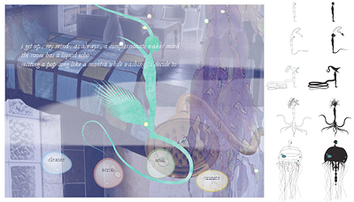
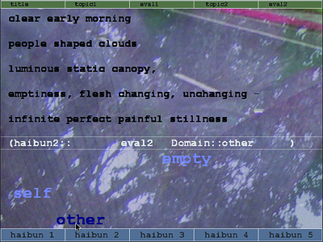
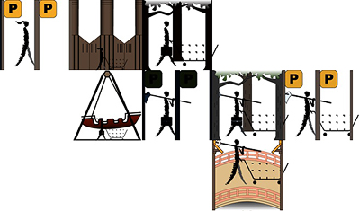
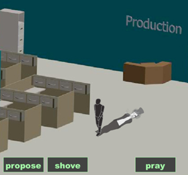
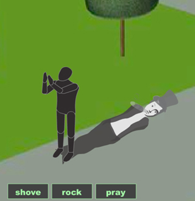
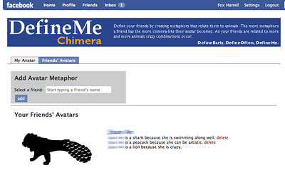
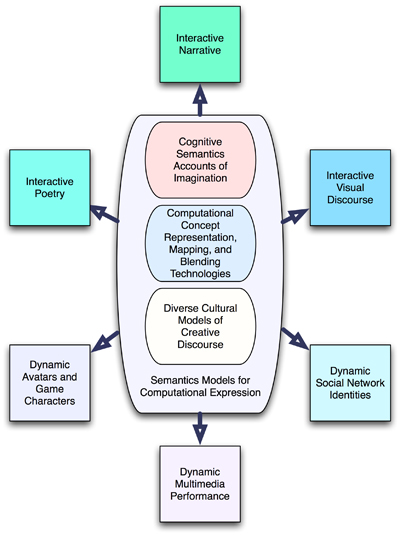

Resetting Theory
Toward a Theory of Phantasmal Media:
An Imaginative Cognition- and Computation-Based Approach to Digital Media
D. Fox Harrell
Introduction
To move beyond this tendentiously posed opposition, a meaningful distinction between these different ways of knowing--the improvisational and the compositional--must inevitably turn upon the axis of interaction. Improvisation must be open--that is, open to input, open to contingency--a real-time and (often enough) a real-world mode of production. ... If we do not need to define improvised ways of producing knowledge as a subset of composition, then we can simply speak of an improvising machine as one that incorporates a dialogic imagination.
-- George E. Lewis, "Too Many Notes: Computers, Complexity and Culture in Voyager," 2000. [1]
Computational media hold the power to improvisationally and dynamically combine formal manipulation of meaningful elements in new ways, at the same time as responding to user interaction. There is always a mixture between human interpretation of meaning, and the limited symbolic ways that machines encode meaning. This balance between computationally manipulable structure and ghostly, subjective human meaning is at the heart of the expressive potential of computing. This perspective on how computing can express evocative imaginative content does not attempt to define any singular vision for how expressive computational narrative, poetry, virtual worlds, social networking platforms, or any related forms should be realized. Rather, it is a perspective on how this interplay between human meaning and machine structuring of information can be the basis for poignant, specific, novel, and creative forms of expression. Computation must exhibit humility about its limitations for capturing the elusive world of human imagination with its blurry boundaries between the conscious and unconscious aspects of meaning, between clearly expressible discourse and affect, between sensory perception and mental imagery.
Yet, humble computing can still intervene beautifully when its ability to structure, change, and respond to information and input is orchestrated with sensitive consideration of the slippery process of human interpretation and experience. So, rather than providing a perspective on computational expression based on defining eventual future forms, the focus here is on various ways that humans negotiate interplays of structure and subjectivity. It is a cross-medial perspective that finds parallels in the balance between orchestrated form and improvised chaos (and political forthrightness) of Charles Mingus's compositions such as in his "Original Fables of Faubus," and the balance between richly lyrical poetic content and a rigid experimental structure in Vladimir Nabokov's novel Pale Fire. [2, 3] The aesthetic potential of computing technologies noted here is inspired by the parallels between a concern for lush prose coexisting with procedurally structured form as in Italo Calvino's novel If on a winter's night a Traveler and the co-habitation of romantic melodies with highly theorized twelve-tone compositional techniques in the classical works of Alban Berg. [4, 5] Jean Toomer's book Cane is an inspiration point as its lyrical portrait of the rural south in the United States jumps from poetry to prose with abandon, and is rooted in a multiply marginalized perspective. [6] Similarly, Samuel R. Delany's interweaving of 1980s anxieties of HIV/AIDS with a swords and sorcery world in "Tale of Plagues and Carnivals" is influential as contemporary social concerns drive the development of an experimental narrative form. [7] Especially, the forms of computational expression envisioned here are informed by works in which subjective meaning can emerge from experimental content structure as in Akira Kurosawa's famous film Rashomon, which is based on Ryunosuke Akutagawa's 1922 short story "In a Grove." [8, 9] The tale of a brutal rape and murder is told and retold from a variety of perspectives: from the vantage point of the victims, the perpetrator, and a by-stander. Meaning is constructed through the concrete knowledge that the event did take place and the shifting, conflicting reports of the event given by the characters. The conflicts between the different points of view are used to create an emergent statement about the human condition and the absence of truth as exemplified in the following dialogue from Rashomon:
Priest: If men don't trust one another, then the earth becomes a hell.
Commoner: Right. The world's a kind of hell.
Priest: No! I don't want to believe that!
Commoner: No one will hear you, no matter how loud you shout. Just think. Which one of these stories do you believe?
Woodcutter: None makes any sense.
Commoner: Don't worry about it. It isn't as if men were reasonable.
Figure 1: Kurosawa's Rashomon is a film where the meaningful difference between multiple narratives adds poignancy.
Like the emergent statement regarding truth in the world from Rashomon, in the hands of a careful author of an expressive computational system, the use of "meaningful difference" between instances of output to allow a global meaning to emerge from repeated execution of the system can be a hallmark of the phantasmal media forms.
This perspective of the expressive potential of computational media bears with it a set of understood risks. It is more intangible, more difficult to define than describing a singular well-known form such as Hollywood cinema, a set of related endeavors like generative art, or even a lofty cultural vision like virtual reality (VR)-based interactive narrative. Rather, it is an approach to thinking about computational media and their future, it is a world view that centralizes culture and content, and is both a prescription and invitation for others to engage this world view. However, this world view is not unfounded, it is based in accounts of cognition, transmedial art traditions, computer science, and cultural theory, synthesizing and reconciling concerns from each. The world view here is both descriptive and prescriptive, it catches glimpses of what computational media can be through existing literature, video games, computational arts, and research, but it also outlines a vision of the future for a powerful new form of expression. It must be a vision that is both coherent and open ended. Finally, this perspective must be open enough so as not to exclude relevant computational media practices.
Rendering this vision of computational expression tangible requires new terminology. The name given to ideal examples of the type of meaning making systems considered in this article is phantasmal media. The term "phantasmal" may summon, for some readers, mental pictures of ghosts, spooks, apparitions, and specters. Yet here it does not refer to those supernatural entities, but rather to the human capacity to construct any other mental images both consciously and unconsciously. The focus is on two related perspectives on the phantasmal. Regarding the first perspective, that phantasmata are conscious mental images, thinkers such as W. J. T. Mitchell have argued that they are closely related to visual images and verbal images as well. [10] Such mental images comprise a range of meaning phenomena. They are imaginative meanings, but crucially are not restricted to language. They can refer to embodied sensations, cultural contexts, and more abstract ideas. Certainly, all of our engagements with media artifacts are accompanied by the mental work of interpretation. Yet, the focus of the concept of phantasmal media is a type of work that often concentrates (primarily through interactive and generative multimedia) on creating narrative and poetic mental imagery to express artistic and critical statements about the world.
The second perspective on the phantasmal focuses on social and cultural illusions in which we are all immersed. This idea has a long history, addressed in various traditions, some still influential and others providing useful descriptive metaphors. Though the approach to the phantasmal here uses the language of contemporary cognitive science to describe processes of the imagination, it is illustrative to touch on previous uses of the term "phantasm" itself. In the last century, psychoanalysts wrote on the notion of the phantasmal. Jean Laplanche and J. -B. Pontalis (in translation using "phantasm (for the 'deep' structure) and fantasy (for the more superficial fantasy or daydream") developed this idea in their seminal text [11]:
From its very beginnings, psychoanalysis has been concerned with the material of fantasies/phantasms (fantasmes). "Fantasy," in German "Phantasie," is the term used to denote the imagination, not so much the faculty of imagining (the philosophers' Einbildungskraft) as the imaginary world and its contents, the imaginings or fantasies/phantasms into which the poet or the neurotic so willingly withdraws.
Now influential in literary theory rather than viewed as grounded scientific knowledge, the phantasm is a useful concept for describing a powerfully expressive type of computational media. In such work, taken up later by philosophers such as Gilles Deleuze in [12], the phantasm often seems to oppress and confine rather than to empower. Indeed, our senses of identity, community, values, which often become quite divisive, arise from the phantasmal. Yet, constructing learning to recognize phantasms and to create new and empowering ones, what Otto Santa Ana calls "insurgent metaphors," can help us to design media with empowering and critically aware aims. [13] Phantasmal media need not only indoctrinate with hegemonic values, but also can construct a play of ideas in order to question or even change social order for the better.
Computational media can construct ideas that we unconsciously accept as true and constitutive of reality, yet in fact these are imaginatively grounded cultural constructions. For example, normative ideas for social categories of nationality, gender, or profession are defined by what cognitive linguists call idealized cognitive models. [14, 15] These models are not based in sets of objective characteristics, but are imaginative and metaphorical constructions that define normal behaviours and appearances, for example that all women seek to experience the joys of motherhood, or that all engineers lack understanding of the arts. Yet, more importantly than its ability to define such idealized cognitive models, phantasmal media that can disrupt them and construct alternatives. Developing phantasmal media lies at the threshold between creating social illusion and the activist pursuit of liberating people from disempowering social constructions. Mental imagery is a part of this, but it is the associated idealized cognitive models that cause a phrase like "race and gender" to conjure up in one person's mind a network of ideas such as unbridled liberalism, identity politics, minority subjects, marginal social issues, guilt, and indignation, and to conjure up for another person clouds of ideas like hegemonic oppression, social justice, activist politics, people of color, positive diversity, and cultural awareness. Both are phantasms, just differing political sides of the same illusion that its subjects are unaware of even as they live it.
Ultimately, the notion of phantasmal media is about artful uses of computational systems. Phantasmal media works both create mental imagery and challenge and provoke users' idealized cognitive models through by enabling active participation imbued with culture and critical awareness. In describing ideal forms of phantasmal media, the starting point is the goal of defining the imaginary worlds and visions and enabling empowering, playful, or critically challenging social impact. Distinctions of highbrow and lowbrow fade under this perspective, discussions attempting to locate computational works in a trajectory of American/European succession of art movements and trends of thought are sidelined--instead computing to enable new imaginative possibilities and attempting to understand the cognitive origins of these possibilities are the central concerns.
The term polymorphic poetics, generalizing the term as referred to in [16], describes the ways that expressive meanings arise and are structured in phantasmal media. [17, 18] It describes building blocks of meaning such as concepts, the structures of events, the ways that people and things exhibit agency in the real and story worlds, and the limited ways by which computation can access, formalize, and manipulate these meaningful building blocks. Polymorphic poetics describes how this interplay of meaning parallels the expressive deployments of form and structure found in the examples ranging from Mingus to Nabokov above. Central processes and structures of polymorphic poetics are transformations from one phantasm to another, mappings between mental images [19], dynamically blending concepts [20], and a range of phenomena in which meaning can be said to be constructed and change dynamically based on computationally controlled control and composition of media elements [21].

Figure 2: Loss, Undersea is a phantasmal media work by the author in which a character dynamically transforms according to undersea metaphors (as in the silhouettes on the right) and poetry is dynamically generated according to affective constraints.
Phantasmal media enable a range of new forms and genres of imaginative computational expression. Phantasmal media authors/artists can begin to think about their software in a new way--just as a goal of developing higher level programming languages is to allow computer scientists to think in terms of problems and solutions as opposed to algorithmic steps, a goal of this approach to expressive computing is to allow higher level digital media arts authorship where the author specifies a range of improvisational interactions to be meaningfully completed by a user rather than designing every interaction explicitly. This article is centrally a speculative look at the expressive possibilities enabled by approaching computational media in this way.
Concrete work has already been done toward these ends. Many works begin to anticipate this vision in gaming, electronic literature, and interactive narrative. The author has developed theory and technology for interactive and generative computational narratives, poetry, games, social networking, and new creative forms of digital multimedia discourse. Some of these works, along with developing prototypes, are discussed below. Potential new forms are on the horizon in which the building blocks for expression are not paragraphs, pages, scenes, sprites, or even media files. Rather, meanings, rendered by human authors into formats that are computationally amenable, become the computational building blocks for new forms of expression. Authors can create digital stories, poems, and games in which some aspects of content such as theme, plot, emotional tone, or metaphorical exposition and imagery can vary improvisationally with user interaction. [22] New meanings emerge from the contrast between multiple readings or play-throughs, and meanings can be composed in response to user interaction. This approach empowers the author to determine narrative, poetic, or other discourse structures, but also empowers the user to explore and co-create those structures. Interaction in these domains should entail allowing users to affect the meanings in the story or poetic world they encounter, as opposed to merely manipulating virtual objects, navigating virtual spaces, or other purely mechanical modes of interaction. For example, opening a door, talking to a virtual character, or performing an action could drive the generation of nostalgic memories [23], change the emotional tone of a tale [22], or cause a poem to be conveyed using a new set of metaphors and/or images [18, 24]. The theoretical approach informing the construct of phantasmal media integrates research in imaginative cognition from cognitive science, formal approaches to semantics and semiotics in computer science, and cultural theoretic views of expressive discourse and media practice.
Computational expression research based on cognitive science approaches is promising for several reasons. Cognitive science no longer explores only what is "inside the head" or how computers can model the mind. Recent cognitive science theories address our capacity for creative and imaginative thought as it is dynamically constructed, distributed among our selves and our artifacts, situated in social contexts, and embodied in our physical experiences. [20, 25-27] These approaches to cognition often centralize what were formerly seen as the domain of the arts: metaphor, analogy, narrative imagining, parable, and blending ideas are seen as the bases, not only high cultural results, but of human imagination. [20] These mental phenomena, described as phantasmal here, comprise the basis for a type of computational work centered in illusion, cognitive imagery, and associated concepts.
An original key method arising from the phantasmal media framework is that formal representations can be leveraged with understanding a system designer/author's expressive intent and the affordances provided by the system for user interpretation. Core to this vision is the development of theoretical tools that allow authors, programmers, and artists to (1) enable digital media authors/artists to "add meaning to media," i.e. construct ontologies (formal descriptions of knowledge structures) as metadata for their media elements (graphics, animation, text, etc.), (2) generate meaningful text and multimedia discourse compositions dynamically, and (3) blend multimedia structures to generate new content dynamically for use in interactive narratives and related works. These tools use the models of imagination from cognitive semantics in order to represent these "meanings" as formalized concepts and their composition and generation as blending and mapping operations. Such models of human imagination aid to enable the creation of digital media technologies with which meaning can be reconfigured and generated on the fly. This requires, for example, authors to describe the visual structure of media elements [24, 28], to formalize the aspects of meaning that are amenable to computation while allowing contextually specific and subjective content to be determined by a human author, and to precisely understand better the needs and values of users of interactive narrative, games, and related technologies. This approach to digital meaning, in which it becomes highly dynamic, contextual, and manipulable, comprises the approach to semantics here.
Traditional "good old fashioned AI" work in knowledge representation, expert systems, semantic networks, and other well-known projects focused on complete and correct formal descriptions of domains to allow shared knowledge bases for making inferences. Though domains themselves may have encoded specific bodies of knowledge, within particular domains comprehensive global understanding was a goal. The results were systems with narrow expertise and the characteristic that "to solve a problem you almost have to know the answer already [34]. An early example of such a project was the blood infection diagnosis expert system MYCIN developed at Stanford University in the 1970's by Ed Feigenbaum, Bruce Buchanan, and Edward Shortliffe [34]. MYCIN produced successful diagnoses in a specific domain based upon rules (including certainty factors) acquired through extensive interviewing of experts. Dynamic, subjective meanings (both culturally entrenched and idiosyncratic) and surprising, novel inferences have not been traditional foci of inquiry in artificial intelligence research. However, for computational narrative artworks and investigation of narrative human thought, small scale, lightweight, and local semantics representations become crucial areas of inquiry. More recent large grained and/or common-sense oriented ontologies and knowledge bases typically are appropriate for constructing roughly hewn inferences for general applications such as popular or low-stakes recommendation systems, for example as in deployments of the Cyc, WordNet, or ConceptNet projects. [29-31] Yet, context shifting and reasoning across domains remain challenges for such systems. A complimentary approach is to provide techniques to allow authors to create their own small-grained ontologies (formal representations of conceptual information) for highly contextual and subjective information. Interaction with these ontologies, then, needs to be well structured and directed so that user options are situated within their limited contexts. Design of these customized lightweight ontologies, and their uses, becomes a research problem informed by aesthetic, cultural, and contextual dictates, even more than technical issues of efficiency or knowledge acquisition methods. The trade-off is that for each system an entirely new set of ontologies needs to be implemented, but more specific and contextually constrained results that are likely to be meaningful to both the author and user's intentions are enabled.
The enabling force behind phantasmal media is a new broad conception of computing. This broad new conception of computing, what can be termed imagination computing, is also both prescriptive and descriptive. It calls attention to the roles of interpretation, culture, and society in computing practices that are often overlooked and undervalued in traditional computer science and engineering. The new terms used to describe the three hallmarks of imagination computing are: subjective computing, cultural computing, and critical computing.
Subjective Computing
Subjective computing refers to endeavors that use computing technologies to construct a dialogue between the expressive goals of system designers and the imaginative interpretive experiences for users. Expressive "goals" are of a different nature than usability- or productivity-oriented goals. In fact, expressive content may be driven by intuition, ambiguity, improvisation, or other abstract concepts whether or not they are useful or even scrutable for the audience of the work. The arts and humanities offer traditions of inquiry arising from such varied goals, and for addressing both traditionally productive arts (such as works bordering on commercial design or even activist art) and introspective or philosophical endeavors (such as conceptual art). Addressing computational systems as subjectivity-oriented artifacts provides a clearer lens for analysis because it does not require artificial subdivision of the work according to disciplinary boundaries. The mathematical, computational, cognitive, and expressive elements of systems can be completely integrated with specific subjective content.
It is important in describing the notion of subjective computing here to acknowledge Sherry Turkle's influential work investigating a "range of new 'intersubjective' relationships" between humans and machines that have developed as computing has infiltrated everyday life. [32] Noting the difference between instrumental, tool-oriented uses of computing and "relational uses" that treat computers as companions, prosthetic uses that treat them as extensions of the self, and more generally everyday uses that treat technologies as objects-to-think with, from a user-centric perspective Turkle writes [32]:
Computer users are frequently more in touch with the subjective computer, the computer that does things to us, to our ways of seeing the world, to the way we think, to the nature of our relationships with each other. Technologies are never "just tools." They are evocative objects. They cause us to see ourselves and our world differently.
The phantasmal media construct finds great synergy with Turkle's notions, especially with her work focusing on new forms of identity enabled by emerging technologies. Yet, drawing upon an ethnographic and psychological perspective, Turkle's focus is often on the crucial ways that these computational technologies serve as "evocative objects" to affect us in our everyday, often uninterrogated (by users), interactions with them. In contrast, the orientation here is toward the design of subjective computational technologies--especially those intended as expressive cultural products, i.e. where the subjective computer is highlighted through interaction with it as the intended creative result of system designers and users. Phantasmal media design notes both implicit and explicit subjective use and expression of computing technologies, highlighting the latter. An observation informing this range of subjective computing engineering and design outcomes is what Gilles Fauconnier terms the "operational uniformity" [33] between everyday imaginative cognition (e.g., understanding causal relationships, associating attributes with entities, empathetically interpreting evens from the perspectives of others, making sense of counterfactuals, and more) and in culturally celebrating creative endeavors such as the arts [34], literature [35, 36], practice of mathematics [37], and music [1, 38]. Subjective computing can emphasize the design of systems explicitly for these expressive uses, and highlights a third perspective of computing beyond the instrumental or Turkle's intersubjective. Digital media arts practitioners also have begun to see the computer as a medium, even trying to distill the essential characteristics that are definitional of the medium in contrast to other media [39, 40]. The practice of subjective computing, in the design of phantasmal media, entails understanding the use of computing to construct not only new forms of identity, but also the ways that we imaginatively express our real selves and our computational self-representations, narrative, and art.
As an example of an outcome of subjective computing practice, implemented using the author's GRIOT system for constructing phantasmal media, the polymorphic poetic work called "The Girl with Skin of Haints and Seraphs" allows for metaphorical reflection on themes such as social classification and racism using a recombinant play of angel and demon verbal imagery implemented using algebraic computational techniques [18, 41], and another multimedia fantasy artwork called Loss, Undersea (see Figure 2) blends the undersea world with the devolution of the contemporary workday also using a cognitive linguistics-based algorithm to enable dynamically varying emotional tone [22]. In examples like these, computational systems have been structured with the goal of generating evocative content focused on imaginative metaphor or emotional impact.

Figure 3: In this example of polymorphic poetry implemented with the GRIOT system instances of generated output respond to themes of stereotypical racial binaries according to input by users. [21]
Starting from acknowledging the contextually situated, socially and technologically distributed, and humanly embodied nature of meaning, subjective computing explores which aspects of meaning can be represented formally by computing systems. Development of the concept of subjective computing is naturally interdisciplinary since it involves accounting for how humans make meaning cognitively, how computational systems can capture, and fail to capture, human meanings, and how humans express those meanings to others in cultural forms. The foundations for the approach here (as introduced above) are based in particular on cognitive semantics theories of how concepts are generated and mapped from one to each other from cognitive science [14, 19, 20, 36], formal approaches to semiotics and cognition from computer science that acknowledge critical perspectives on artificial intelligence and do not attempt to reduce human cognition to computation [41], and cross-cultural and media theoretic approaches to expressive multimedia narrative, poetry, and other imaginative discourse forms [21, 22, 40, 42, 43].
Cultural Computing
Cultural practices and values are implicitly built into all computational systems. However, it is not common to develop systems with explicit engagement with, and foundations in, cultural practices and values aside from those traditionally privileged in discourse surrounding computing practices. [44] Cultural computing entails engaging commonly excluded cultural values and practices that can potentially spur computational innovation, and can root and invigorate expressive computational production. In particular, diverse ways of representing and manipulating semantic content and distinctive relationships between humans and our (digital) artifacts can form the basis for new technical and expressive computing practices. Cultural computing also necessitates reflection on the challenges involved in making cultural values explicit in computing practices, including imputing them with essentialist characteristics [45], stereotyping cultural production forms of particular cultures, and enabling cultural plunder, i.e. using diverse aesthetic traditions only to empower culturally privileged, hegemonic, often implicitly "Western" materialistic, logocentric, and production-oriented modes of thought that inform many engineering practices. In contrast, cultural computing means empowering technologies serving in a plurality of world views.
As case studies and examples of cultural computing, two examples of phantasmal media systems are cited below. In the first, the notion of orature as it has been theorized and practiced in the African diaspora [44, 46, 47], quite in contrast to Walter Ong's media-deterministic "great divide" perspective in [48], is presented to shed insight and ground new technical practices for computational discourse generation and interaction. Spatial situatedness, performativity, audience-performer interaction, improvisation, and an integrative view of the arts are just a few of the topics in computational expression valuably addressed from a novel perspective in this analysis.
 
Figure 4: "The Griot Sings Haibun" includes generated images and interactive polymorphic poetry, such as in the screenshots above, to be performed with musicians in collective improvisation.
An example of this is "The Griot Sings Haibun," developed by the author and Joseph Goguen with musical collaboration from Bertram Turetzky, David Borgo, and Ryoko Goguen, a collaborative improvised performance of music, poetry, images, and computation. The live musicians fueled collective improvisation with a polymorphic poem implemented with GRIOT, in which a human "played" an ever-changing expressive text during the live performance. The polymorphic poem in "The Griot Sings Haibun" generates (neo)haibun: combined narrative prose and haiku-like poetry of everyday experience, influenced by Basho, and the traditions of beat poetry and African call-and-response; the content addresses qualia, the qualitative feel of this human life world. [49]
A second case study is a generative multimedia poetry project informed by an account of the interplay between iconicity and conceptual metaphor by Masako Hiraga and C.S. Peirce's semiotics. [28, 50] This work looks at the ways in which visual icons and the structure of visual signs, along with metaphor, convey meaning in Chinese characters and Japanese renku poetry. [24, 51-53]

Figure 5: The Generative Visual Renku project presents a new form of concrete polymorphic poetry inspired by Japanese renku poetry, iconicity of Chinese character forms, and generative models from contemporary art. [24]
In the Generative Visual Renku project, developed by the author and Kenny K. N. Chow, calligraphic iconic animations are dynamically composed by the system on the basis of formalized visual and conceptual constraints in response to user actions into a fanciful topography articulating the nuanced interplay between organic (natural or hand-created) and modular (mass-produced or consumerist) artifacts that saturate our lives, animated characters traverse the resultant topography and accumulate possessions (e.g., hats with mouse ears after passing through an amusement park ride, or a camera after passing through a television) based on the spaces they have journeyed through. The iconic imagery is composed based upon underlying small-scale ontologies describing the visual, structural, and conceptual content of the imagery. The uncanny and coherent poetic landscapes and character transformations generated by the systems project illustrate how visual meaning can also be subjectively represented using expressive ontologies and that the cultural systems addressed here provide useful approaches to structuring such meanings dynamically. This dynamic reconfiguration of image, structure, and concept comprises further elaboration of the idea of polymorphic poetics.
Both case study projects provide methods for making cultural forms of meaning explicit in computational systems. The joint assessment of both case studies indicates that diverse cultural groundings have enabled new expressive forms of phantasmal media that have been well received in both humanistic and computing venues, and with implications for many broader forms of generating discourse computationally (such as educational technology and gaming).
Critical Computing
Critical computing refers to the ability of computing to say something about the real world and to make an impact, especially to engage disempowering hegemonic norms and socio-technical conditions. The critical computing concept helps technologists to move beyond issues of usability oriented human-computer interaction to think about issues like social identity, power relationships, and political configurations. In areas such as user-interface design, computer-supported cooperative work, and social networking, issues of users' knowledge and experience bases, social groupings, and facility for social interaction, are all intrinsic to the technology. Yet, though occasionally relying upon sociological or anthropological methods, rich areas of social critique and insight from marginalized peoples and humanistic discourses are often overlooked in computer science. For example, exploring the area of classification infrastructures, important for numerous computing applications, science studies researchers Geoffrey Bowker and Susan Leigh Star write:
Why should the computer scientist read African-American poets? What does information science have to do with race-critical or feminist methods and metaphysics? The collective wisdom in those domains is one of the richest places from which to understand these core problems in information systems design: how to preserve the integrity of information without a priori standardization and its often attendant violence. In turn, if those lessons can be taken seriously within the emerging cyberworld, there may yet be a chance to strengthen its democratic ethical aspects. [54]
Critical computing means allowing engineers, scientists, and other software designers to address such issues through technical solutions, rather than to suggest that end use and its analysis are matters left to be sorted out in the real world after deployment. The view here is that technologists can be socially, critically engaged and structure software taking full advantage of long traditions of thought oriented toward human empowerment and complex and thoughtful engagement with or societies.
 
Figure 6: Chameleonia: Shadow Play is a prototype critical identity politics game in which an avatar and its shadow (performed and imagined selves) dynamically transform, along with the cinematic presentation of the scene, based on player selected gestures and the current location.
Critical computing refers to the potential for computing practices to define medium specific modes of social critique and analysis. By making issues of subjectivity and culture explicit in formal systems, critique through interaction, generation, and simulation becomes possible. Toward developing a systematic approach for such analyses, the Imagination, Computation, and Expression (ICE) Laboratory (Director, Harrell) has been engaging the issue of social identity in computational discourse, gaming, and social networking. In particular, under the rubric of the Advanced Identity Representation (AIR) Project, the ICE Lab has investigated social identity based on the reciprocity of computational implementation methods in both social networking and gaming is presented. This approach looks at avatars, characters, and user profiles as examples of phantasmal media elements. The ways in which users of such systems imaginatively map themselves into digital identity proxies, metaphorically extend their self-conceptions, and categorize themselves and others are addressed. The work in classification by Geoffrey Bowker and Susan Leigh Star and in categorization by George Lakoff and Eleanor Rosch, along with multiple stands of research into narrative and social identity, inform this work. [14, 54]
One developing prototype of such as system is a game called Chameleonia: Shadow Play (see Figure 6). Chameleonia: Shadow Play is a prototype single player game of shifting identity where the construction of self is at stake. In this game, a continuously walking player character transforms dynamically in response to both gesture and context (e.g., suburban or corporate scenes) while the character's shadow transforms differently in parallel. The player character represents the external (performed) self, while the shadow represents the socially constructed self. The difference between the two illustrates Bowker and Star's concept of torqued identity where one's self conception differs from the way society views her/him. [54] A continuously walking player character performs actions selected by the player such as "beg" or "shove." Based on these actions, and where they are performed, a number of effects take place. Contextual information, such as whether the action is performed in a "suburban" or "corporate" location will cause the camera angle to change (or in the future other procedural effects to occur dynamically). At the same time, the shadow transforms according to the concept associated with the gesture, such as "commerce" or "aggression." It may be represented as a bazooka-toting cowgirl/boy sipping a softdrink--at the next moment s/he may be represented as a gold chain and pocketwatch wearing tycoon with stock charts bursting from her/his top-hatted head. The game is meant to suggest how people become both naturalized and marginalized in communities and social contexts. One of the major ways in which humans naturalize within communities is by displaying contextually appropriate gestures.
Another example of the ICE Lab's phantasmal media works is DefineMe: Chimera, a social networking (Facebook) application in which users define metaphorical profiles and avatars for each other, and several games and avatar creation systems where users' representations change dynamically based upon social context, user interaction, and artifact use. For example, if one user enters "Kwame is a lion because he enjoys the shade" and another person enters "Kwame is peacock because he never flies," a hybrid lion-peacock avatar will be generated. The idea that we are defined, in part, by others, and not only by our self-determinations, is currently underrepresented in social computing. The DefineMe database is designed to be lightweight, dynamic, and extensible, while implementing categorical relationships between members. When comparing profiles, DefineMe is designed to match lexical items and logical relations directly, or it can compare the structures of profiles following insights from the analogical structure-mapping engine (SME) developed by Ken Forbus et. al. [55, 56] Following the work of Eleanor Rosch cited in [14], the labeling system can also be used to define aspects of categories themselves. For instance, a 'robin' tag can be added to the category, 'birds,' to define the prototype of that category. In this way, members can belong to multiple groups, but individuals can represent the prototypical members of groups. This relatively lightweight structure avoids some of the pre-defined categorization built into many social networking infrastructures, and has the potential to explore some of the more nuanced identity phenomena mentioned in the theoretical framework above.

Figure 7: DefineMe: Chimera is a phantasmal media work in which users of a social networking site metaphorically define each others' profiles and the system generates chimerical avatars.
The unifying theme illustrated by these examples is that many current identity representation systems replicate false, disempowering, and limited notions of identity from the point of view of cognitive, constructive, and performative analyses, and that imaginative forms of identity enabled by phantasmal media can powerfully provide critique of, and improvement over, current models.
Exemplary and Future Forms
Since this is an article about how computing technologies can allow for the development of phantasmal media, the structure of the article has revolved around three new ways to view computing. Phantasmal media are used as exemplary forms to illuminate the necessity and potential of each the triadic conception of subjective, cultural, and critical computing argued for here. The overview of the approaches to both analyzing and building phantasmal media provided here has developed through both the author's previous research and pedagogical approaches to topics such as interactive narrative or technologies of representation. The phantasmal media construct is at once iconoclastic and broadly embracing of existing systems and theories. Heretofore articulated over a series of publications, this article has summarized the hallmarks of the construct in a way that it is hoped will be a useful lens for creative computational culture producers and theorists.
Further elaborating the phantasmal media construct, the following proposes a set of characteristics that may result in exemplary works of phantasmal media. Exemplary forms often strongly incorporate a number of the following:
- Constructively imaginative: users can co-construct viewpoints and experiences along with authorially constructed imaginative meaning;
- Constructively authored: authors construct high level themes while accounting for users' own generative themes, i.e. authors guide contexts for interpretation;
- Transformative: users can engage in perspectives other than their own, they can blend their identities with media elements that can dynamically change during interaction (offering potential for a sense of real world personal transformation);
- Dynamically improvisational: works are implemented to create new experiences (in form and content, not only interpretation) on each instantiation or run-through depending on context, viewer, authorial intent;
- Computational: the computer is used as a medium and its unique procedural and data-structural affordances are invoked [39, 40, 43];
- Intertextual: works are constructed in dialogue with works in other media forms, the novelty of the technical form is not held as a goal in itself and does not entail avoiding conventions from other media forms; [57]
- Content-driven: works do not require novelty for its own sake or use solely computational techniques for their own sakes, they are driven by the meanings to be expressed;
- Socially engaged: works cannot be understood or created by focusing on the experience of an individual user at a single machine, they take into account that all computing work is a result of a social process (whether the end result is networked, a team of cultural producers created a work, or the content relies upon specific social contexts). [58, 59]
In defining a set of characteristics that denotes speculative exemplars, a subjective set of aesthetic criteria is being posited. These criteria are a stake in the ground, a perspective on forms of computational discourse that, as stated in the introduction, hold power to agitate, disrupt, challenge, change, inspire, and reflect on trials and triumphs of the human condition.
Built upon these foundations, this chapter recapitulates several unique hallmarks of phantasmal media described that are worth emphasizing. These are their:
- Cross-media applicability: a focus on cognitive underpinnings allows phantasmal media models to be applicable to multiple computational forms (multimedia arts, poetry, interactive narrative, gaming, educational technology, social networking, and more).
- Subjective expressive formalization: the phantasmal media construct provides methods for digital media authors to create small ontologies encoding their subjective viewpoints to act as metadata for their multimedia elements. This offers a high level of control, while avoiding some of the pitfalls of large-scale semantic network endeavors.
- Cultural grounding: the phantasmal media approach does not privilege one cultural model of expression, e.g. the dream of immersive virtual reality space. A focus on basic building blocks of meaning allows for a range of narrative and other discourse models to be implemented.
and
- Computational Criticality: the phantasmal media approach encourages deployment of expressive computing forms for social empowerment and critique of social phenomena. Computational semantics can be about the real world just as works in literature or film can address the real world.
Figure 8 illustrates an overview of the phantasmal media approach to computational expression, sketching just a few of the new eventual forms to which it is applicable.

Figure 8: There are a number of promising eventual forms of phantasmal media.
Conclusion
The phantasmal media vision is speculative in the following sense. There is, as of yet, no singular defining expressive computational work that has captured the popular imagination or achieved the salience or cultural relevance of works of poetry or narrative in other media. Computational media practitioners are all too often shackled by reflection upon the medium itself rather than the broader human condition, and are also similarly bound by culturally privileged visions for what expressive computing technologies should be. They seek holy grails that practitioners make incremental steps toward achieving. Such visions include the idea of the immersive panorama, traced through theatre with no fourth wall, the zoetrope, cinema, VR, and onward to the full sensory immersion. [60] Another is the idea of the automaton or mechanized mind, traced through the golem, through the mind body, split, through the Turing test, problem solving AI, and the dream of strong AI, criticized by [61-64] and others. Yet the ideas here, though not opposed to virtual embodiment or machines doing things that are usually seen as within the domain of human intelligence, are not solely aligned with one of these holy grails. A wide range of expressive possibilities should arise from this approach, just as computer gaming does not determine a set of interaction models--a new game holds the potential to introduce an entirely new metaphor for interaction and set of mechanics for meaning conveyance. Some new forms will remain experimental, and thus are more difficult to define in terms of a singular long-term vision, and perhaps others will be conventionalized as happened in cinema. Both types of eventualities are at the root of the phantasmal media vision.
Phantasmal media can ultimately realize fantastic blends of ideas, rich metaphors, social hierarchies, and cultural identities and many other exemplars of the diverse power of imaginative cognition. In particular, ideal forms may explore how social illusions are often constructed in discourse both cognitively and culturally. Phantasmal media can engage social empowerment by inventing new forms of digital discourse deeply informed by accounts of meaning and narrative from cognitive science and techniques for representing meaning and narrative from computer science. Narrative and poetry are often a unifying theme in describing idealized forms of the work. Narrative and poetry are central to human communication, and structure much of our creative imaginations, shared bodies of knowledge, and even our senses of self. The stories we tell using computational media, however, often fail to capture our needs, dreams, and aspirations. Finally, phantasmal media works are about how to use computing to assist people in achieving our imaginative potentials. Ideal forms of phantasmal media can support social empowerment using gaming and related technologies such as interactive narratives, collaborative digital worlds, interactive and generative video, and, most importantly, new forms unanticipated by any of the above. Empowering the disempowered is not merely a matter of technological support. The end hope here is that these ideas can contribute to imaginative visions, meaningful experiences, and expressive statements that lead to real world insight and action.
Acknowledgements
---------------------------------
Some of the projects above involved brilliant contributions and code by ICE Lab students. In particular, Kenny Chow, Daniel Shane Upton, and Jichen Zhu have been inspired coders and thinkers. Others who have made valuable contributions include Ben Medler, Bobby Schweizer, Jisun An, Ayoka Chenzira, Tonguc Sezen, Digdem Sezen, Donna Sammander, Emily Cribb, Bryan Berry, Brett Holmes, Sadhir Hussain Sathakathul Hameed, Suhas Virmani, and Devika Karnik.
Notes
-------------------
[1] G. E. Lewis, "Too Many Notes: Computers, Complexity and Culture in Voyager," Leonardo Music Journal vol. 10, pp. 33-39, 200.
[2] C. Mingus, "Charles Mingus Presents Charles Mingus," Candid Records, 1960.
[3] V. Nabokov, Pale Fire. New York, NY: Putnam Publishing Group, 1962.
[4] I. Calvino, If on a winter's night a traveler. San Diego, CA: Harvest/HBJ Books, 1982.
[5] A. Berg, "Chamber Concerto; Three Orchestral Pieces, Op. 6; Violin Concerto," Sony, 1995.
[6] J. Toomer, Cane. New York City: Liveright Publishing Corporation, 1923.
[7] S. R. Delany, Flight from Nevèrÿon. Hanover, CT: Wesleyan University Press, 1994.
[8] A. Kurosawa, "Rashomon," Daiei, 1950.
[9] R. Akutagawa, Rashomon and Other Stories. New York: Liveright, 1999.
[10] W. J. T. Mitchell, Iconology: Image, Text, Ideology. Chicago, IL: University of Chicago Press, 1987.
[11] J. Laplanche and J. B. Pontalis, "Originary Phantasm, Phantasms of Origins, Origins of the Phantasm (revised and abbreviated translation)," Les temps modernes vol. 19, 1964.
[12] G. Deleuze, The Logic of Sense. New York: Columbia University Press, 1990.
[13] O. Santa Ana, Brown Tide Rising: Metaphors of Latinos in Contemporary American Public Discourse. Austin: University of Texas Press, 2002.
[14] G. Lakoff, Women, Fire, and Dangerous Things: What Categories Reveal about the Mind. Chicago, IL: University of Chicago Press, 1987.
[15] V. Evans, B. K. Bergen, and J. Zinken, "The Cognitive Linguistics Enterprise: An Overview," in The Cognitive Linguistics Reader, V. Evans, B. K. Bergen, and J. Zinken, Eds. London, U.K.: Equinox Press, 2006.
[16] D. F. Harrell, "Algebra of Identity: Skin of Wind, Skin of Streams, Skin of Shadows, Skin of Vapor," in Critical Digital Studies, A. Kroker and M. Kroker, Eds. Toronto: University of Toronto Press, 2008.
[17] J. Goguen and D. F. Harrell, "Style as a Choice of Blending Principles," in Style and Meaning in Language, Art, Music and Design, Proceedings of the 2004 AAAI Fall Symposium, Washington D.C., 2004.
[18] D. F. Harrell, "Shades of Computational Evocation and Meaning: The GRIOT System and Improvisational Poetry Generation," in 6th Digital Arts and Culture Conference, Copenhagen, Denmark, 2005, pp. 133-143.
[19] G. Lakoff and M. Johnson, Metaphors We Live By. Chicago, IL: University of Chicago Press, 1980.
[20] G. Fauconnier and M. Turner, The Way We Think: Conceptual Blending and the Mind's Hidden Complexities. New York: Basic Books, 2002.
[21] D. F. Harrell, "GRIOT's Tales of Haints and Seraphs: A Computational Narrative Generation System,," in Second Person: Role-Playing and Story in Games and Playable Media, N. Wardrip-Fruin and P. Harrigan, Eds. Cambridge, MA: MIT Press, 2007.
[22] D. F. Harrell, "Walking Blues Changes Undersea: Imaginative Narrative in Interactive Poetry Generation with the GRIOT System," in AAAI 2006 Workshop in Computational Aesthetics: Artificial Intelligence Approaches to Happiness and Beauty, Boston, MA, 2006.
[23] J. Zhu and D. F. Harrell, "Daydreaming with Intention: Scalable Blending-Based Imagining and Agency in Generative Interactive Narrative," in AAAI 2008 Spring Symposium on Creative Intelligent Systems, D. Ventura, M. L. Maher, and S. Colton, Eds. Stanford, CA: AAAI Press, 2008, pp. 156-162.
[24] D. F. Harrell and K. K. N. Chow, "Generative Visual Renku: Linked Poetry Generation with the GRIOT System," in Electronic Literature Organization Conference Vancouver, WA, 2008.
[25] E. Hutchins, "Distributed Cognition," in International Encyclopedia of the Social & Behavioral Sciences, University of California, San Diego, 2000.
[26] J. Lave and E. Wenger, Situated learning: Legitimate periferal participation. Cambridge, U.K.: Cambridge University Press, 1991.
[27] F. Varela, E. Thomson, and E. Rosch, The embodied mind: Cognitive science and human experience. Cambridge, MA: MIT Press, 1991.
[28] M. K. Hiraga, Metaphor and Iconicity: A Cognitive Approach to Analysing Texts. New York: Palgrave Macmillan, 2005.
[29] C. Havasi, R. Speer, and J. Alonso, "ConceptNet 3: a Flexible, Multilingual Semantic Network for Common Sense Knowledge," in Recent Advances in Natural Languges Processing, 2007.
[30] N. Siegel, K. Goolsbey, R. Kahlert, and G. Matthews, "The Cyc System: Notes on Architecture," Cycorp, Inc.2004.
[31] C. Fellbaum, "WordNet: An Electronic Lexical Database," Cambridge: MA: MIT Press, 1998.
[32] S. Turkle, "Whither Psychoanalysis in Computer Culture?," Psychoanalytic Psychology vol. 21, pp. 16-30, 2004.
[33] G. Fauconnier, "Methods and Generalizations," in Scope and Foundations of Cognitive Linguistics, T. Janssen and G. Redeker, Eds. The Hague: Mouton De Gruyter, 2000, pp. 95-127.
[34] M. Turner, "The Artful Mind: Cognitive Science and the Riddle of Human Creativity," New York: Oxford University Press, 2006.
[35] M. Turner, The Literary Mind: The Origins of Thought and Language. New York; Oxford: Oxford UP, 1996.
[36] G. Lakoff and M. Turner, More than cool reason -- a field guide to poetic metaphor. Chicago, IL: University of Chicago Press, 1989.
[37] G. Lakoff and R. E. Núñez, Where mathematics comes from: How the embodied mind brings mathematics into being. New York: Basic Books, 2000.
[38] L. M. Zbikowski, Conceptualizing Music: Cognitive Structure, Theory, and Analysis. New York: Oxford University Press, 2002.
[39] L. Manovich, The Language of New Media. Cambridge, MA: MIT Press, 2001.
[40] J. H. Murray, Hamlet on the Holodeck: The Future of Narrative in Cyberspace. New York: Free Press, 1997.
[41] J. Goguen, "An Introduction to Algebraic Semiotics, with Applications to User Interface Design," in Computation for Metaphors, Analogy, and Agents, Yakamatsu, Japan, 1998.
[42] H. L. Gates Jr., The Signifying Monkey: A Theory of African-American Literary Criticism. New York: Oxford, 1988.
[43] D. F. Harrell, "Theory and Technology for Computational Narrative: An Approach to Generative and Interactive Narrative with Bases in Algebraic Semiotics and Cognitive Linguistics," in Computer Science and Engineering. vol. Ph.D. La Jolla: University of California, San Diego, 2007.
[44] D. F. Harrell, "Cultural Roots for Computing: The Case of African Diasporic Orature and Computational Narrative in the GRIOT," in Digital Arts and Culture 2007, Perth, Australia, 2007.
[45] R. Eglash, "African Influences in Cybernetics," in The Cyborg Handbook, C. H. Gray, Ed. London, U.K.: Routledge, 1995.
[46] E. Biakolo, "On the Theoretical Foundations of Orality and Literacy," Research in African Literatures, vol. 30, pp. 42-65, Summer 1999.
[47] w. T. o. Ngugi, Penpoints, Gunpoints, and Dreams: Towards a Critical Theory of the Arts and the State in Africa. Oxford, U.K.: Oxford University Press, 1998.
[48] W. Ong, Orality and Literacy: The Technologizing of the Word. London, U.K.: Methuen, 1982.
[49] J. Goguen and D. F. Harrell, "The Griot Sings Haibun," La Jolla, 2005, p. UCSD CalIT2 Opening Performance.
[50] C. S. Peirce, Collected Papers of Charles Saunders Peirce. Cambridge, MA: The Belknap Press of Harvard University Press 1965.
[51] W. J. Higginson, The Haiku Handbook: How to Write, Share, and Teach Haiku. Tokyo, Japan: Kodansha International, 1985.
[52] W. J. Higginson, The Haiku Seasons: Poetry of the Nature World. Tokyo, Japan: Kodansha International, 1996.
[53] W. J. Higginson, "Renku Home," renku.home.att.net/ (accessed December 15, 2007), 2006
[54] G. C. Bowker and S. L. Star, Sorting Things Out: Classification and Its Consequences. Cambridge, MA: MIT Press, 1999.
[55] K. D. Forbus, "Exploring Analogy in the Large," in The Analogical Mind: Perspectives from Cognitive Science Cambridge, MA: MIT Press, 2001.
[56] D. Gentner, "Structure-mapping: A theoretical framework for analogy," Cognitive Science, vol. 7, pp. 155-170, 1983.
[57] J. Kristeva, Desire in Language: A Semiotic Approach to Literature and Art. New York: Columbia University Press, 1980.
[58] J. Goguen, "Towards a Social, Ethical Theory of Information," in Social Science Research, Technical Systems and Cooperative Work, L. G. Geoffrey Bowker, Leigh Star, William Turner, Ed. Mahwah, N.J.: Lawrence Erlbaum Associates, 1997, pp. 27-56.
[59] B. Latour, Reassembling the Social: An Introduction to Actor-Network-Theory. Oxford, U.K.: Oxford University Press, 2005.
[60] O. Grau, Virtual Art. Cambridge, MA: MIT Press, 2003.
[61] W. Sack, "Artificial Human Nature," Design Issues, vol. 13, pp. 55-64, 1997.
[62] T. Winograd and F. Flores, Understanding Computers and Cognition: A New Foundation for Design. Norwood, NJ: Albex Corporation, 1986.
[63] H. L. Dreyfus, What Computers Still Can't Do: A Critique of Artificial Reason. Cambridge, MA: MIT Press, 1992.
[64] P. E. Agre, Computation and Human Experience. Cambridge, U.K.: Cambridge University Press, 1997.
----------------
Fox Harrell is a researcher, author, and artist exploring the
relationship between imaginative cognition and computation. He is
Assistant Professor of Digital Media in the department of Literature,
Communication, and Culture at the Georgia Institute of Technology. He
directs the Imagination, Computation, and Expression [ICE] Lab/Studio
(icelab.lcc.gatech.edu) in developing new forms of computational
narrative and poetry, gaming, social networking, and related digital
infrastructures and technical-cultural media with bases in computer
science, cognitive science, and digital media arts. He has presented his
work internationally; sites of his publications and presentations
include the MIT Press, the University of Toronto Press, the
Inter-Society for the Electronic Arts (ISEA) conference, conferences and
symposia of the Association for the Advancement of Artificial
Intelligence (AAAI), the Digital Arts and Culture Conference, CTheory,
and other book chapters, journals, and conferences. He holds a Ph.D. in
Computer Science and Cognitive Science from the University of
California, San Diego. He earned an M.P.S. in Interactive
Telecommunications at New York University's Tisch School of the Arts. He
also earned a B.F.A. in Art, a B.S. in Logic and Computation, and minor
in Computer Science at Carnegie Mellon University, each with highest
honors. He has worked as an interactive television producer and as a
game designer.
© CTheory. All Rights Reserved